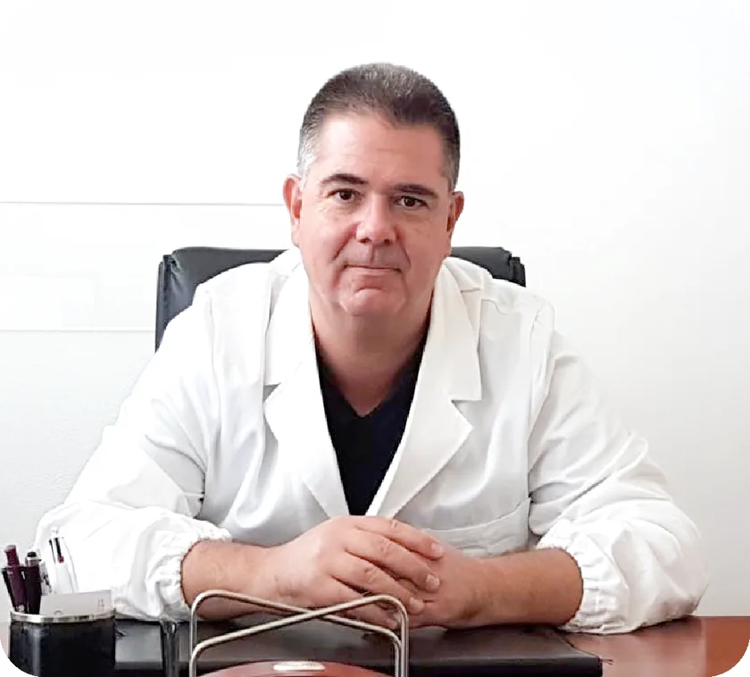
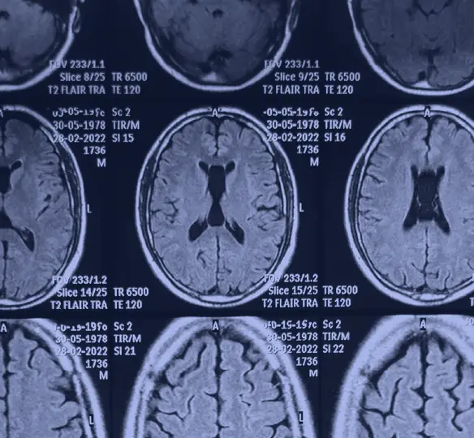
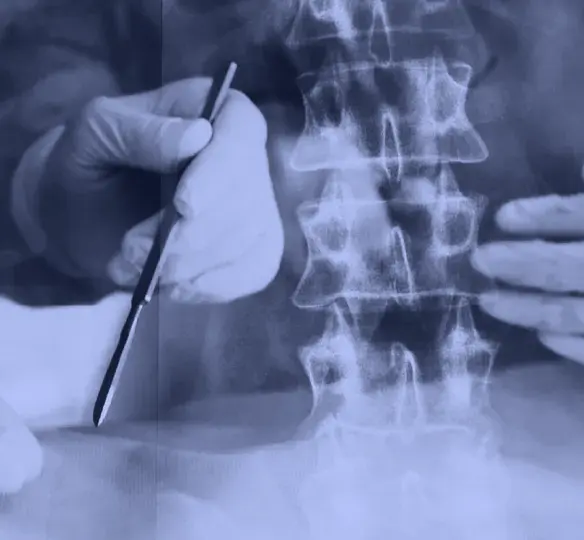
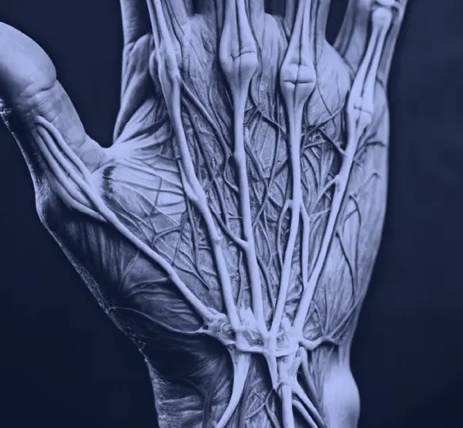
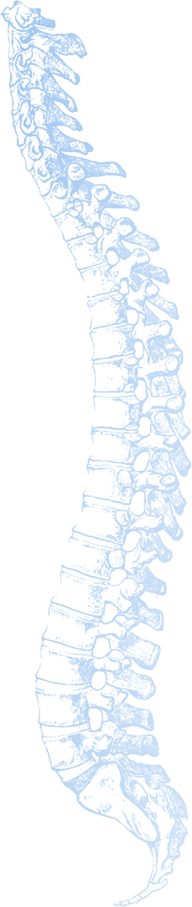

Direttore della Neurochirurgia · Policlinico Riuniti di Foggia
Cervello, colonna vertebrale e nervi periferici.
Visite neurochirurgiche a Bari e Foggia: una lettura chiara degli esami e delle opzioni di cura, conservative quando è possibile, chirurgiche quando servono.

Di cosa mi occupo
Le patologie trattate seguono il percorso del sistema nervoso: dall’encefalo, lungo la colonna vertebrale, fino ai nervi degli arti.

Tumori del cervello
Gliomi, meningiomi, metastasi e tumori della base cranica, con neuronavigazione e monitoraggio.
Approfondisci →
Colonna vertebrale
Ernia del disco, stenosi, mielopatia cervicale, fratture e tumori della colonna.
Approfondisci →
Nervi periferici
Lesioni traumatiche e tumori dei nervi di braccia e gambe.
Approfondisci →Aneurismi e patologie vascolari
Aneurismi cerebrali, malformazioni, emorragie ed ematoma subdurale cronico.
Approfondisci →Chirurgia endoscopica
Ernie del disco operate con un’incisione di un centimetro, quando l’indicazione lo permette.
Approfondisci →Tecnologie in sala operatoria
Neuronavigazione, microscopio robotizzato, endoscopia, fluorescenza e laser.
Approfondisci →
Mal di schiena, ernia, stenosi: prima si cura, poi, se serve, si opera
La maggior parte dei problemi della colonna migliora senza intervento. Quando la chirurgia serve, si preferiscono, dove possibile, tecniche mini-invasive ed endoscopiche.
Alcuni motivi frequenti per una visita
In caso di sintomi improvvisi e gravi (forte mal di testa improvviso, perdita di forza, difficoltà a parlare) rivolgersi subito al 112 o al pronto soccorso.
Un neurochirurgo che spiega, prima di operare
Mi sono formato all'Università di Bari e opero dal 1999; oggi dirigo l'Unità Operativa di Neurochirurgia del Policlinico Riuniti di Foggia.
In visita guardo gli esami insieme al paziente e spiego con parole semplici cosa mostrano e quali sono le opzioni. Se serve un intervento, spiego come si svolge, quali sono i rischi e cosa aspettarsi dopo.
Dalla sala operatoria alla ricerca
Con l’Università di Foggia il Dott. Colamaria coordina il centro italiano di una rete di ricerca internazionale su neuro-oncologia, intelligenza artificiale e chirurgia mini-invasiva.
Dove ricevo
Un giorno a settimana per ogni sede: conviene prenotare con anticipo.
Cosa dicono i pazienti
Oggi sono 9 anni dalla mia cranioplastica, diretta dal mio neurochirurgo di fiducia, molto umano, Antonio Colamaria, che mi ha salvato la vita e mi ha donato una vita più bella.
Sono stato ricoverato dieci giorni presso il Reparto di Neurochirurgia del prof. Colamaria per l'asportazione di un neurinoma nella zona lombare della colonna vertebrale. In tale circostanza ho potuto apprezzare le qualità morali e professionali dello staff (dagli OS, agli infermieri e dottori tutti) il quale è intriso di valori etici, vocazionali ma soprattutto professionali. L'ospedale Riuniti deve essere orgoglioso della sua eccellenza: Neurochirurgia!
Dopo circa 4 anni di convivenza con dolori , giramenti di testa vertigini, mal di testa, dolori lombari , finalmente abbiamo prenotato visita neurochirurgica dal dott. Colamaria, ci ha dato piena fiducia dal primo impatto, ci ha prescritto una serie di esami tra tac, risonanza ecc, appena pronti tutti gli esami , ha riscontrato un ernia cervicale da intervento, noi subito allarmati, ma lui con professionalità, serenità e tranquillità, ci ha rassicurati di stare tranquilli , subito prenotato intervento chirurgico al policlinico di Foggia, dopo 10 giorni ci hanno chiamato, intervento, tre giorni di degenza in ospedale, subito dimissioni, intervento riuscito perfettamente grazie al dott, Colamaria e' il suo equipe medico , mia moglie è rinata veramente una cosa da non credere, dopo aver trascorso tutto dicembre e metà gennaio perennemente a letto mia moglie e ' ritornata a camminare passeggiare non ha più nessun dolore, è per altro soffriva di pressione alta da 15 anni oggi è ritornato tutto nella norma, a eliminato pure la pillola della pressione, un vero professionista, non aggiungo altro grazie ancora Antonio Colamaria, sei un vero professionista serio , grazie di tutto
Sono stata ricoverata recentemente presso il reparto di neurochirurgia di Foggia dove sono stata assistita da tutto il personale con grande professionalità e umanità. Questo ha alleviato le sofferenze di quel momento. Un ringraziamento particolare al dirigente dott. Colamaria per la professionalità, cura e attenzione che ha avuto, oltre che nell'esecuzione dell'intervento, durante tutta la degenza. Grazie
Sono stata operata dal dottor Antonio Colamaria presso il reparto di UOC di neurochirurgia del Policlinico “Riuniti” di Foggia di cui è direttore. Ha eseguito con perizia e precisione un intervento molto delicato. La sua chiarezza nell’espormi i rischi a cui andavo incontro ma anche la pazienza con cui ha risposto a tutti i miei numerosi quesiti, mi hanno dato subito la certezza di essere nelle mani di un professionista serio, preparato e con delle grandi competenze oltre che ad un medico empatico e rassicurante, nonostante la situazione complicata della mia malattia.
Vorrei aggiungere che anche il reparto di neurochirurgia da lui diretto funziona molto bene, con una elevata attenzione al paziente sia da parte del personale medico, infermieristico e paramedico.
Un grazie sincero al dottor Colamaria per quanto ogni giorno fa.
Delia Bavaro
Prima della visita
Come prenoto una visita?
Telefonando o scrivendo su WhatsApp alla segreteria al 379 103 2243: un solo numero per entrambe le sedi.
Cosa devo portare?
Gli esami già fatti (CD o link delle immagini di risonanza, TAC o radiografie, con i referti), eventuali visite specialistiche precedenti e l'elenco dei farmaci che assumi.
Ho già una proposta di intervento: posso chiedere un secondo parere?
Sì. Porta gli esami e la relazione che ti è stata consegnata: li valutiamo insieme e ti spiego le alternative possibili.
Il mal di schiena si opera sempre?
No. Nella maggior parte dei casi di patologia degenerativa della colonna si parte da terapie conservative; la chirurgia è indicata solo in situazioni specifiche, valutate caso per caso.
Prenota la tua visita
Un solo numero per Bari e Foggia: la segreteria risponde anche su WhatsApp.